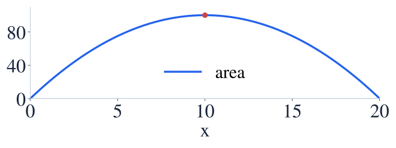

Optimization
최적화
Optimization starts with a feasible model, not with setting an arbitrary derivative to zero.
최적화는 아무 식이나 미분하는 대신 가능한 상황을 모형화하는 데서 시작합니다.
Optimization starts with a feasible model, not with setting an arbitrary derivative to zero.
최적화는 아무 식이나 미분하는 대신 가능한 상황을 모형화하는 데서 시작합니다.
A rectangle has perimeter 40 m. Maximize its area with positive side lengths.
둘레 40m인 직사각형의 넓이를 최대로 하세요. 변의 길이는 양수입니다.

Use the constraint to express area in one variable before differentiating.
제약식을 이용해 넓이를 한 변수로 나타낸 뒤 미분합니다.
Area is the objective; perimeter is the constraint.
넓이가 목표량이고 둘레는 제약조건입니다.
Find the feasible stationary candidate.
가능한 범위 안에서 정지점 후보를 찾습니다.
The downward parabola has its global maximum at this vertex.
아래로 열린 포물선의 꼭짓점이 전체 최댓값을 줍니다.
Check the domain and justify a maximum; a zero derivative alone is not enough.
정의역을 확인하고 최댓값임을 설명하세요. 도함수가 0이라는 것만으로 부족합니다.
What is the greatest rectangle area?
가능한 직사각형의 최대 넓이는 얼마인가요?